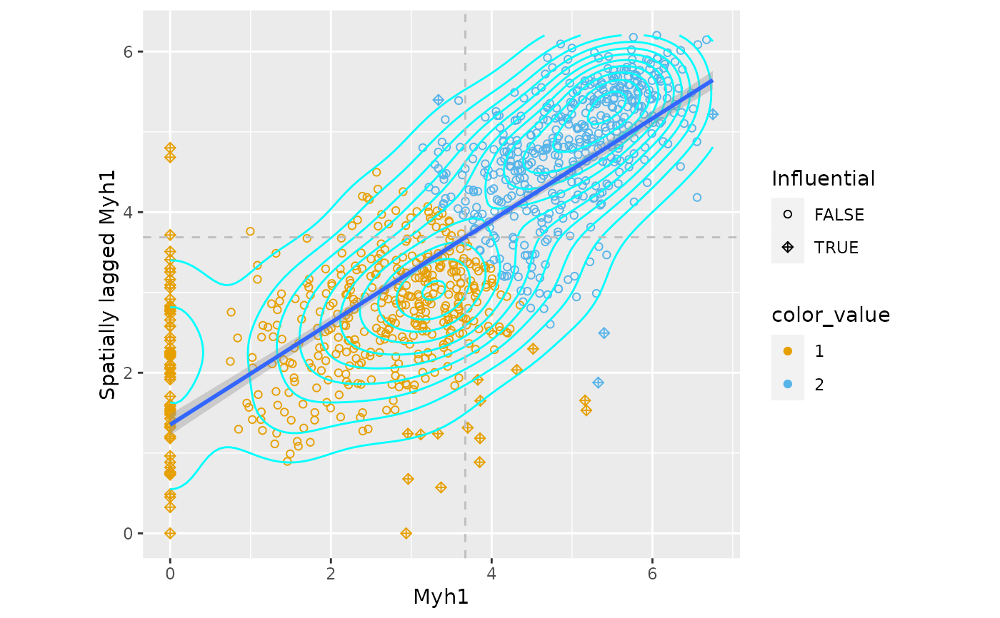

This function uses ggplot2 to plot the Moran plot. The plot would be
more aesthetically pleasing than the base R version implemented in
spdep. In addition, contours are plotted to show point density on the
plot, and the points can be colored by a variable, such as clusters. The
contours may also be filled and only influential points plotted. When filled,
the viridis E option is used.
Usage
moranPlot(
sfe,
feature,
graphName = 1L,
sample_id = NULL,
contour_color = "cyan",
color_by = NULL,
colGeometryName = NULL,
annotGeometryName = NULL,
plot_singletons = TRUE,
filled = FALSE,
divergent = FALSE,
diverge_center = NULL,
show_symbol = TRUE,
...
)Arguments
- sfe
A
SpatialFeatureExperimentobject.- feature
Name of one variable to show on the plot. It will be converted to sentence case on the x axis and lower case in the y axis appended after "Spatially lagged". One feature at a time since the colors in
color_bymay be specific to this feature (e.g. fromclusterMoranPlot).- graphName
Name of the
colGraphorannotGraph, the spatial neighborhood graph used to compute the Moran plot. This is to determine which points are singletons to plot differently on this plot.- sample_id
One sample_id for the sample whose graph to plot.
- contour_color
Color of the point density contours, which can be changed so the contours stand out from the points.
- color_by
Variable to color the points by. It can be the name of a column in colData, a gene, or the name of a column in the colGeometry specified in colGeometryName. Or it can be a vector of the same length as the number of cells/spots in the sample_id of interest.
- colGeometryName
Name of a
colGeometrysfdata frame whose numeric columns of interest are to be used to compute the metric. UsecolGeometryNamesto look up names of thesfdata frames associated with cells/spots.- annotGeometryName
Name of a
annotGeometryof the SFE object, to annotate the gene expression plot.- plot_singletons
Logical, whether to plot items that don't have spatial neighbors.
- filled
Logical, whether to plot filled contours for the non-influential points and only plot influential points as points.
- divergent
Logical, whether a divergent palette should be used.
- diverge_center
If
divergent = TRUE, the center from which the palette should diverge. IfNULL, then not centering.- show_symbol
Logical, whether to show human readable gene symbol on the plot instead of Ensembl IDs when the row names are Ensembl IDs. There must be a column in
rowData(sfe)called "symbol" for this to work.- ...
Other arguments to pass to
geom_density2d.
Examples
library(SpatialFeatureExperiment)
library(SingleCellExperiment)
library(SFEData)
library(bluster)
library(scater)
sfe <- McKellarMuscleData("full")
#> snapshotDate(): 2022-10-17
#> see ?SFEData and browseVignettes('SFEData') for documentation
#> downloading 1 resources
#> retrieving 1 resource
#> loading from cache
sfe <- sfe[, colData(sfe)$in_tissue]
sfe <- logNormCounts(sfe)
colGraph(sfe, "visium") <- findVisiumGraph(sfe)
sfe <- runUnivariate(sfe, type = "moran.plot", features = "Myh1")
clust <- clusterMoranPlot(sfe, "Myh1", BLUSPARAM = KmeansParam(2))
moranPlot(sfe, "Myh1", graphName = "visium", color_by = clust[, 1])
